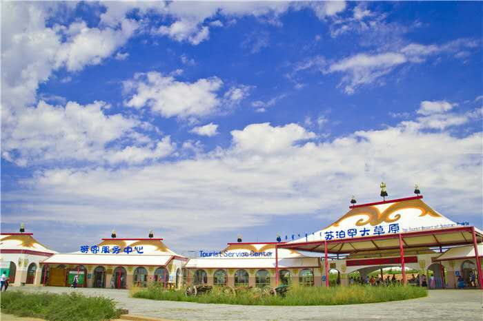

苏泊罕大草原旅游景区，是内蒙古富有游牧草原文化特色的旅游景区，中国西部极具游牧激情浪漫的旅游休闲度假胜地，国家AAAA级旅游景区，坐落于鄂尔多斯伊金霍洛旗西部美丽的苏泊罕153平方公里的草原。
苏泊罕大草原，是鄂尔多斯保留较为完整的原生态游牧草原，是成吉思汗六征西夏的屯兵整军之地、伊克昭七旗会盟及阅兵校武故地、鄂尔多斯明清时期最大的驿站、伊克昭盟盟歌诞生地及官敖包发祥地；是成吉思汗哈日苏勒德龙年巡游鄂尔多斯七旗的始发地，也是藏传佛教早期领袖进京谒帝途中重要的休养礼佛圣地。
苏泊罕游牧大草原旅游景区，以十三世纪游牧草原文化为背景，以伊克昭盟352年历史为记忆，以激情苏泊罕，浪漫大草原为主题，以游牧集镇和草原爱情为突破点，形成七旗会盟区、游牧时代区、宗教信仰区、那达慕娱乐区四大旅游区域，集畅游草原、激情娱乐、实景演艺、穹庐住宿、游牧大餐、马背纵情、牧人养生、草原狂夜、民俗艺术等功能于一体，尽显鄂尔多斯“七旗营盘”黄金家族的王府之气。
阿冬谷大牧场游牧天堂的毡帐世界、小白马小黄牛小山羊部落的开心快乐、那达慕盛会上“男儿三艺”的动地竞技、白塔寺院秘境草原的古刹佛韵；真实再现传统“骑蒙古马、住蒙古包、吃蒙古餐”的生动场景，构建999座激情草原玫瑰毡房，展示马背民族古老而原始的游牧文化与原生态技艺，倾力绘制鄂尔多斯婚礼浪漫演艺的实景图画，盛大推出伊克昭七旗会盟庆典震撼人心的史诗乐章，打造一座极具中国游牧草原文化特色活态博物馆，打造中国西部十三世纪游牧草原文化特色的体验与休闲旅游品牌。